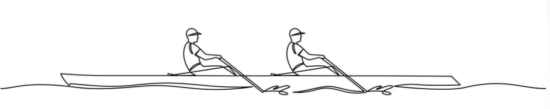

Lucie a David
Jak jsme se poznali
Kdysi dávno, v předalekém městě Brně, žil mladý a odvážný chlapec, který každodenně vyrážel sportovat na břehy tamní přehrady. Stejné cesty však křižovala i mladá dívka, krásná jako letní ráno, která se stejnou vášní věnovala sportu.
Kdysi dávno, v předalekém městě Brně, žil mladý a odvážný chlapec, který každodenně vyrážel sportovat na břehy tamní přehrady. Stejné cesty však křižovala i mladá dívka, krásná jako letní ráno, která se stejnou vášní věnovala sportu.
Jednoho dne, osudového a plného kouzel, se jejich cesty protnuly. Mladá dívka, okouzlená statečností a šarmem mladého chlapce, mu s úsměvem nabídla tiramisu, které sama připravila. Byl to lahodný dezert, jehož chuť byla stejně nezapomenutelná jako chvíle, kterou spolu sdíleli. S tiramisu mu dívka předala i recept, sepsaný jejím vlastním rukopisem, a mladý chlapec si jej s pečlivostí schoval, aniž by tehdy tušil, jak důležitý tento malý kousek papíru v jeho životě jednou bude.
Jak léta plynula, vítr zapomnění odvál vzpomínku na původce receptu, ale na krásnou dívku nezapomněl. Po mnoha letech, kdy jeho srdce stále tichým hlasem volalo po oné dívce, se rozhodl využít moc moderních prostředků a napsal jí zprávu skrze sociální sítě. Osud nebo náhoda? Jakmile došlo na téma tiramisu, dívka okamžitě rozpoznala svůj rukopis a vzpomněla si na ten osudný den.
Byla to tedy jen hra osudu, která je znovu svedla dohromady? Nebo snad pečlivě promyšlená taktika krásné dívky, jež již tehdy věděla, že tímto prostým gestem spojí své a chlapcovy životy navždy? To zůstává záhadou, kterou si s sebou vezmou až do věčnosti.